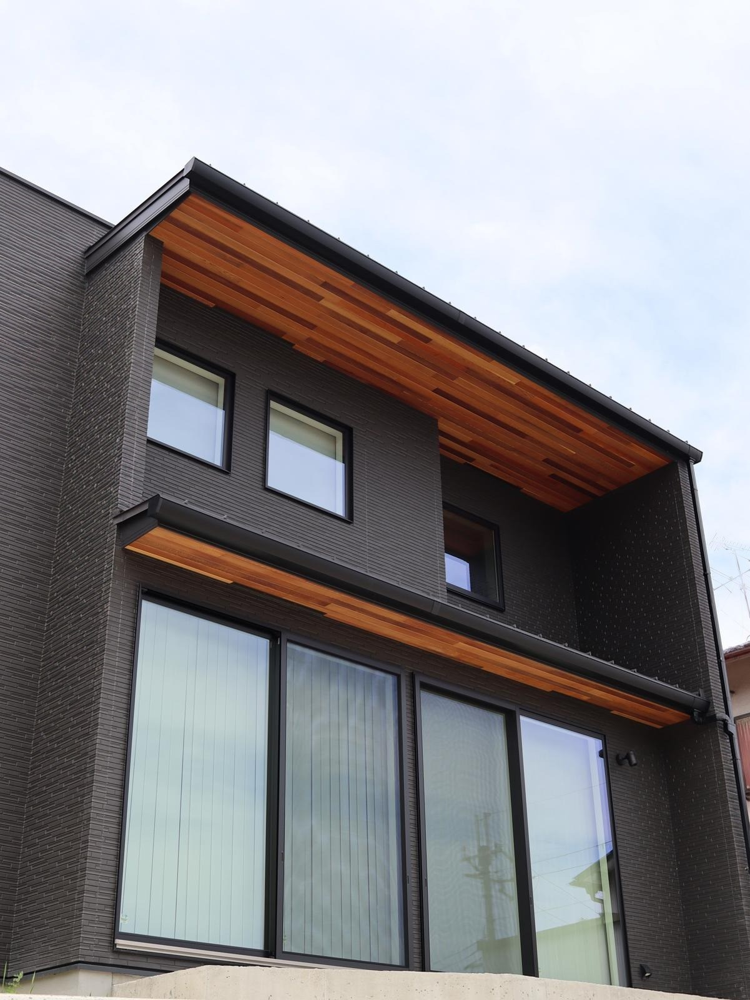
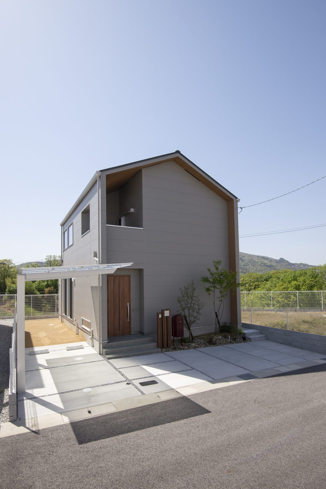

「塗り壁にしたいけど、汚れませんか」——外観の打ち合わせで必ず出る質問です。先に正直に答えます。汚れます。ただ、塗り壁だから汚れるのではありません。どんな外壁も汚れます。違うのは「どこが、どんなふうに汚れるか」と、「そのあと戻せるか」です。
汚れる場所は、だいたい決まっています
お引き渡しから何年も経ったお家を点検で回っていると、汚れている場所はいつも同じです。材料の良し悪しよりも、雨と日当たりの当たり方で決まります。
裏を返せば、汚れは設計でかなり防げます。軒を出す、窓の上に小さな庇をつける、水切りを入れて雨の道をつくる。この判断は図面の段階でしかできません。建ててからでは足せないのが、外壁の汚れのやっかいなところです。

塗り壁とサイディング、汚れ方の違い

当社の標準はKMEWの「光セラ」16mmです。太陽の光と雨で汚れが落ちる仕組みが表面に入っています。奈良のように夏に雨が集中する土地では、この「雨が洗ってくれる」性質がよく効きます。
いっぽうで、塗り壁は「直せる」のが強みです。サイディングは同じ柄が廃番になると部分的な張り替えが難しくなりますが、塗り壁は塗り重ねられます。10年、20年と付き合う前提なら、これは小さくない差です。
当社は両方やります。実例でも、塗り壁の外観のお家が何軒もあります。標準はサイディングですが、「この外観にしたい」というご希望があれば塗り壁でお造りします。どちらが上ということではなく、好みと、その家の形に合うかどうかです。
「10年で塗り替え」は、本当でしょうか
外壁の塗り替えは10年、とよく言われます。これは目安であって、期限ではありません。同じ年に建った同じ仕様の家でも、軒の深さ・方角・前の道路・風の抜け方で、傷み方はまったく違います。
実際に点検で見ていると、10年でまだ十分もつお家もあれば、7〜8年で手を入れたほうがいいお家もあります。「10年経ったから塗り替えましょう」ではなく、見てから決めるのが正しい順番です。当社が定期点検（3ヶ月・6ヶ月・1年・2年・5年・10年〜）を続けているのは、この判断を一緒にするためです。
気をつけていただきたいこと。築10年前後になると、外壁の塗り替えを勧める飛び込みの営業が増えます。「今なら足場代が無料」「近所で工事をしているので」という誘い方が多い。まだ必要ないのに塗ってしまうと、それは前倒しで払っただけになります。判断に迷ったら、建てた工務店に見せてから決めてください。当社のお客様なら、点検のついでに一緒に見ます。
日々のお手入れは、水で流すだけ
特別なことは要りません。気になったときにホースで水をかける。それだけで、砂ぼこりや軽い汚れはかなり落ちます。強い薬品や高圧洗浄機は避けてください。表面の仕上げを傷めて、かえって汚れやすくなることがあります。
よくあるご質問
白い塗り壁は、やっぱり汚れが目立ちますか？
目立ちます。とくに窓下の雨だれは黒い筋になるので、白は正直に出ます。ただ、白を諦める必要はありません。窓の上に小さな庇を回す、窓の下に水切りを入れる、軒を深くする——この3つで、雨だれはかなり抑えられます。「白にしたい」と最初に言っていただければ、その前提で図面を描きます。
北側の緑っぽい汚れは、取れますか？
取れます。水で流すか、専用の洗浄で落ちることがほとんどです。ただ、日当たりと風の抜けが変わらなければまた出ます。植栽が壁に近すぎる場合は、少し離すだけでも改善します。

汚れにくい色はありますか？
いちばん汚れが目立ちにくいのは、薄いグレーやベージュなどの中間色です。真っ白と真っ黒は、どちらも汚れが分かりやすい色です。とはいえ外観は毎日見るものなので、好きな色を選んで、汚れは設計で抑えるほうが後悔がありません。
シーリング（つなぎ目のゴム）はいつ替えるのですか？
これも「何年で」と決めつけず、点検で状態を見ます。切れやひび割れが出てきたら交換の時期です。外壁の塗り替えと同じタイミングでまとめると、足場代が一度で済みます。

奈良の工務店シバ・サンホームで、初めての家づくりに伴走しています。お金のことこそ正直に。モットーはスピード・誠実さ・楽しさ。